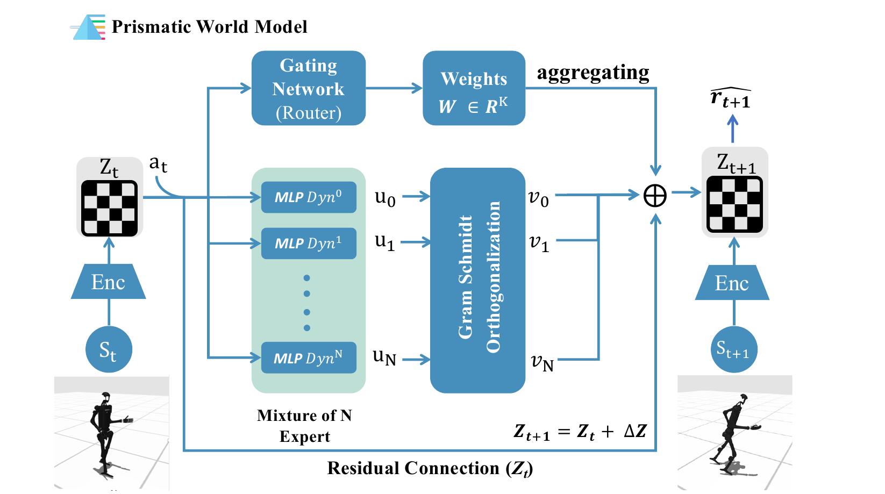
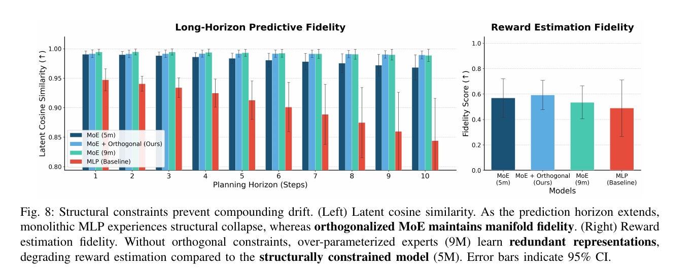
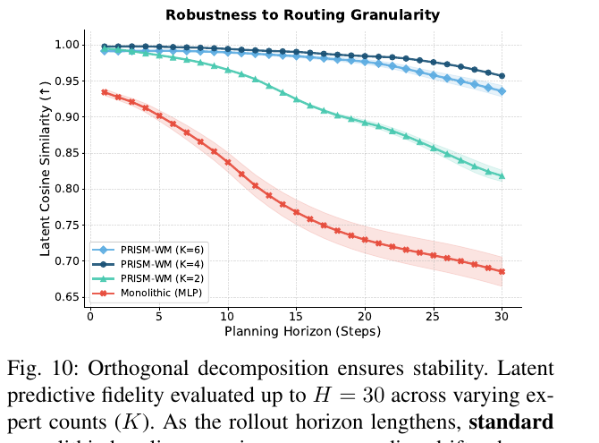
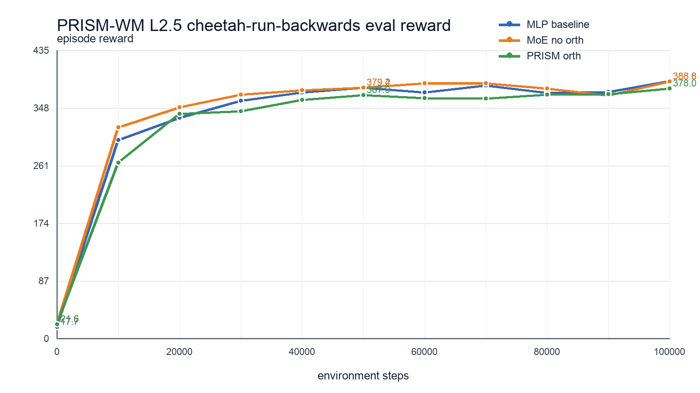

TD-MPC 已经把 world model 从一个很大的愿望，压成了一个更具体的控制接口。
它不要求模型还原整个世界。它只要求模型在行动前提供有用的未来：当前 observation 被编码成 latent state，planner 在这个 latent space 里测试候选动作序列，reward model 和 value model 给这些 imagined trajectories 打分。
这条链里最脆弱的是被 planner 反复调用的预测接口。
transition function
\[ \hat z_{t+1}=d_\theta(z_t,a_t) \]这个函数回答的问题很直接：如果模型现在处在 latent state zₜ，并且尝试动作 aₜ，下一步 latent state 应该变成什么？
rollout 不是只预测一步。planner 会从当前 zₜ 开始，拿一串候选动作反复调用 dynamics model。
latent rollout
\[ \begin{aligned} (z_t,a_t) &\xrightarrow{d_\theta} \hat z_{t+1} \\ (\hat z_{t+1},a_{t+1}) &\xrightarrow{d_\theta} \hat z_{t+2} \\ (\hat z_{t+2},a_{t+2}) &\xrightarrow{d_\theta} \hat z_{t+3} \\ &\cdots \end{aligned} \]每条候选 trajectory 都会被 reward model 和 terminal value 评分。planner 选分数最高的一条，只执行第一步，然后下个时刻重新规划。
问题就落在这里：如果 dθ 本身把物理世界里最关键的模式切换抹平了，planner 反复调用它时，到底在相信什么？
接触不是一条光滑曲线
机器人走路、跳跃、避障、抓取时，物理不是单一的平滑函数。
脚还没碰地是一种动力学；脚刚踩到地面又是另一种动力学。物体还没被抓住是一种状态；抓住之后，接触力、摩擦、约束都会改变。论文把这类系统称为 hybrid systems：连续运动中夹着离散的 regime switch。
术语注
这里的 regime 可以理解成“动力学模式”。脚在空中、脚踩到地面、物体被抓住，分别遵循不同的局部动力学；regime switch 就是系统在这些模式之间切换。
PRISM-WM 对比的 TD-MPC / TD-MPC2 这类 latent world model，通常用一个 monolithic MLP 来学 transition。
monolithic transition baseline
\[ (z_t,a_t)\rightarrow \mathrm{MLP}\rightarrow \hat z_{t+1} \]monolithic MLP
monolithic 指“单体式”：所有状态和动作都交给同一个 MLP 处理；MLP 是多层感知机，也就是常见的全连接神经网络。这里对应 PRISM-WM 论文里的 monolithic TD-MPC2 / MLP baseline，不是一篇单独叫“普通 latent world model”的论文。
MLP 可以先理解成“固定长度向量到固定长度向量的函数拟合器”。在这里，它输入 (zₜ, aₜ)，输出下一步 latent state。LLM 里也有 MLP：Transformer block 通常是 attention + MLP / FFN。
这个 MLP 理论上可以拟合复杂函数，但实践里容易学成一个平均态。它会把 stance 和 flight、sticking 和 sliding、support force 和 friction residual 混在同一个连续函数里。对一步预测来说，这个错误可能还不明显；对 planner 来说，问题会被放大。planner 每多往前想一步，就多信一次这个被平滑过的 dynamics。
TD-MPC 保留什么，PRISM-WM 改什么
这就是 PRISM-WM 的切入点。TD-MPC 已经解决了第一层压缩：不要重建所有 observation，只学习对控制有用的 task-oriented latent state。PRISM-WM 追问第二层：如果 planner 反复调用的 dθ 仍然是一个单体连续函数，它会不会把 hybrid dynamics 的边界平均掉？
到这里，需要把 TD-MPC 和 PRISM-WM 的边界确定好。TD-MPC 里的这套模型叫 TOLD，Task-Oriented Latent Dynamics。它至少包含几组接口。
| 接口 | 作用 |
|---|---|
| zₜ = hθ(oₜ) | 把当前 observation 编成 task-oriented latent state |
| ẑₜ₊₁ = dθ(zₜ, aₜ) | 根据当前 latent state 和动作预测下一步 latent state |
| r̂ₜ = Rθ(zₜ, aₜ) | 预测这一步的 reward |
| terminal value Vθ | 在 H-step rollout 末端，用预测 latent state 估计剩余 return |
这里的 θ 是神经网络参数的常用记号。hθ 是 encoder / representation network；zₜ 是 t 时刻的 latent state；aₜ 是 t 时刻的动作。planner 不是 world model 本身，它是使用 world model 搜索动作序列的算法。严格说，world model 也不等于 transition function；transition function 是其中最像“预测未来”的部分。
所以 PRISM-WM 没有否定 TD-MPC；它对 TD-MPC 提出一个更具体的判断：TD-MPC 的接口可以保留，问题不在于回到原始 observation reconstruction，也不在于推翻 MPC + value bootstrapping。PRISM-WM 保留 encoder 产生 zₜ、planner 做 latent rollout、reward/value 给 trajectory 打分这套框架；它改的是 dθ 的参数化方式，把单个 monolithic MLP 换成 gated、orthogonalized 的 expert residual dynamics。

PRISM-WM 改了哪个接口
PRISM-WM 的核心公式很短。
gated residual update
\[ \hat z_{t+1}=z_t+\sum_{k=1}^{K}w_{t,k}v_k(x_t) \]逐个读：
- zₜ当前 latent state。
- aₜ候选动作。
- xₜ通常由 zₜ 和 aₜ 拼起来。
- wₜ,ₖ第 k 个 expert 在当前这一步被采用多少。
- vₖ(xₜ)第 k 个 expert 对当前 context 输出的 residual direction。
路由权重
gating network 可以先理解成一个小的路由网络。它读取当前 context，也就是这一步的 latent state 和动作组合，先给每个 expert 打一个原始分数 sₜ,ₖ。
\[ w_{t,k}=\frac{\exp(s_{t,k})}{\sum_{j=1}^{K}\exp(s_{t,j})}, \qquad \sum_{k=1}^{K}w_{t,k}=1 \]softmax 的作用是把这些原始分数变成一组非负权重，并且让它们加起来等于 1。于是 wₜ,ₖ 就有了很直观的含义：当前这一步，模型应该多相信第 k 个 expert。
注意，wₜ,ₖ 本身不是预测结果。真正提出变化方向的是 vₖ(xₜ)；wₜ,ₖ 只是乘在这个方向前面的系数。某个权重大，它对应的 expert 就对下一步 latent state 影响更大。
所以 PRISM-WM 把 dynamics function 从一个单独的 MLP，改成一组 local dynamics primitives 的组合。
gate + experts
\[ \begin{aligned} (z_t,a_t)&\xrightarrow{\mathrm{gate}}\{w_{t,k}\}_{k=1}^{K} \\ &\xrightarrow{\mathrm{experts}}\sum_{k=1}^{K}w_{t,k}v_k(x_t)\rightarrow \hat z_{t+1} \end{aligned} \]gate 的工作不是显式识别“左脚支撑”或“右脚腾空”。论文也提醒过，经过 Gram-Schmidt 后的 expert 不应该被强行解释成一一对应的物理事件。它更像是在 latent residual space 里提供一组不重复的方向。真正的物理模式由 gate 在这些方向上的组合来表达。
换句话说，PRISM-WM 没有给每种接触状态手写一个专家。它让模型自己学一组可组合的 residual basis，然后让当前 (zₜ, aₜ) 决定怎么混合。
为什么只加 MoE 还不够
直接把一个 MLP 换成多个 expert，并不自动解决问题。
如果几个 expert 学到的是同一种函数，MoE 只是更大的 MLP。参数变多了，但 regime 没有真正分开。PRISM-WM 加的关键约束是 latent orthogonalization。
论文里做法是：每个 expert 先输出一个向量 uₖ，然后用稳定版 Gram-Schmidt 把它变成 vₖ。
orthogonalized residual basis
\[ \begin{aligned} \tilde v_k &= u_k - \sum_{i=1}^{k-1}\langle v_i,u_k\rangle v_i \\ v_k &= \frac{\tilde v_k}{\lVert \tilde v_k\rVert_2+\epsilon} \end{aligned} \]这一步的作用很具体：让后来的 expert 输出减掉已经被前面 basis 解释过的部分。最后得到的 vₖ 更不容易挤到同一个方向上。
这个设计的品味在于，它没有把“物理模式”写死成标签。它只是给 dynamics residual 加了一个结构偏置：请尽量用不重复的方向解释未来变化。接触、滑动、落地、恢复平衡这些模式，理论上可以通过 gate 的权重变化在这些 basis 上组合出来。
这个区别也解释了论文为什么强调 orthogonalized MoE。vanilla MoE 能增加 capacity；orthogonalization 试图减少 expert redundancy。前者让模型更大，后者让模型更像在分解问题。
证据：它到底有没有减少 rollout drift
这篇论文最值得看的指标是 long-horizon fidelity。单点 reward 只能说明某个训练时刻的控制表现；horizon 拉长后的 fidelity，才直接对应这篇论文对 world model 的判断。
如果 PRISM-WM 的故事成立，模型在短 horizon 上未必显得惊艳，但随着 rollout horizon 变长，monolithic MLP 应该更快漂掉；orthogonalized MoE 应该更能保持 latent trajectory 的方向一致性。

在 Fig. 8 里，monolithic MLP 的 latent cosine similarity 随着 horizon 增长下降更明显；MoE 和 orthogonalized MoE 保持得更稳。右边的 reward fidelity 也在提醒一个细节：更大的 vanilla MoE 不一定更好，因为 over-parameterized experts 可能学到 redundant representations。

DMC-30 上 PRISM-WM 的 mean normalized score；monolithic TD-MPC2 是 0.430。
论文报告 PRISM-WM 在 30 个任务中的 26 个超过 baseline。
zero-shot sim-to-sim transfer 里 PRISM-WM 的 target return drop；monolithic MLP 是 47.8%。
Table II 中 K=4 PRISM-WM 的推理延迟，和 monolithic baseline 同量级。
这些结果共同支撑一个判断：PRISM-WM 的收益应看 long-horizon rollout 里的 latent trajectory drift 下降；单纯容量增加解释不了全部现象。对 model-based RL 来说，这比单点 reward 更贴近 world model 的用途。
这篇论文真正改变了什么
PRISM-WM 把改动集中在 TD-MPC 的 transition function 上。
这个函数会被 planner 在 rollout 里反复调用；一旦它把接触模式平均掉，后面的 reward prediction、value estimate 和 action selection 都会沿着错误的未来走。
所以这篇论文提出了一个很具体的世界模型判断标准：world model 要服务 planner，transition function 就不能把接触、滑动、落地这些动力学切换平均成同一个连续函数。只保留 task-relevant information 不够；dynamics 的结构也要对。
TD-MPC 的问题意识是：别把 capacity 浪费在重建无关细节上。PRISM-WM 接着往下问：如果已经只学 latent dynamics，但这个 latent dynamics 把物理模式平均掉了，planner 仍然会被误导。
- 被反复调用的对象planner 在每次 rollout 中都依赖 dθ。
- 核心 failure modedθ 把 contact boundary 平滑掉。
- 应看的证据long-horizon latent fidelity；单点 reward 不够。
仍然没解决的问题
regime 数量能否自动发现
论文主实验用 K=4，Fig. 10 也说明不同 K 的表现有差异。原文 limitations 也承认，expert count K 仍然是手调超参。更深的问题不是“K 怎么调”，而是一个真实机器人任务到底有多少 latent regimes，模型能不能自己发现。平地走、跳跃、抓取、推拉、摔倒恢复，接触结构不会固定在一个常数上。
soft mixture 是否足够表达硬切换
PRISM-WM 最后仍然用 Σₖ wₖvₖ 得到 residual。这个 convex-like blend 对稳定训练很友好，但 hybrid systems 的某些切换可能更接近硬边界。原文也把 beyond weighted sum 写进 future work。真正的问题是：soft mixture 能不能表达足够尖锐的 contact discontinuity，还是需要更接近 discrete switching 的 composition function？
orthogonal basis 是否真的对应物理结构
论文没有把每个 expert 宣称为某个具体物理事件，甚至明确说 orthogonal experts 不会一一对应真实物理事件。orthogonal basis 是 latent residual space 的结构约束，和真实接触标签之间还隔着一层表示学习。它可以帮助 gate 学出 quasi-discrete switching，但不能直接读成“专家 1 是左脚，专家 2 是摩擦”。这里最值得继续追问的是：模型学到的是物理分解，还是一个在 DMC / MuJoCo 上好用的 latent geometry？
真实机器人和 partial observability 下是否仍成立
论文做了 zero-shot sim-to-sim transfer，但这还不是 real robot。真实系统里有传感噪声、遮挡、延迟、软接触、执行误差，很多关键变量并不完全可观测。原文也把 real-world robotics 和 partial observability 写进 future work。PRISM-WM 的 orthogonal basis 能不能在这种更脏的观测条件下继续隔离 uncertainty，是它能否从 simulator result 走向 embodied world model 的关键。
实现和复现 caveat
公开代码里确实有 MoE dynamics / reward path，use_moe=true 会切到 MoEBlock，use_orthogonal=true 会进入 orthogonalization 路径，小规模真实环境 ablation 也能跑通。
但这些还不是 paper-level benchmark reproduction。我做过一个 cheetah-run-backwards 的 100k-step 单 seed sanity check，final reward 是：
| variant | final reward |
|---|---|
| baseline_mlp | 388.82 |
| moe_no_orth | 388.57 |
| prism_orth | 377.97 |
这组结果没有复现 prism_orth > baseline_mlp 的方向。它更像一个诊断信号：也许需要更多 seed、更长训练、更贴近论文的 DMC-30 setting，或者更细的 implementation audit。尤其值得继续检查的是 paper-code alignment：当前 release 里 MoE auxiliary loss 看起来可能没有按预期参与 gate 的梯度更新。这不推翻论文，但它提醒我们，读 paper 和信 release artifact 是两件不同的事。

世界模型要保留什么结构
TD-MPC 给出的判断是：world model 不必还原整个世界。PRISM-WM 接着补上另一句：world model 不能把行动相关的物理结构抹掉。
这两个判断并不冲突。一个 task-oriented world model 可以不关心背景纹理、阴影和无关像素；但如果它要服务 locomotion planner，它就必须关心接触、冲击、摩擦和支撑这些会改变未来动作价值的结构。
the small interface that matters
\[ \hat z_{t+1}=d_\theta(z_t,a_t) \]planner 反复调用它。value function 依赖它。reward prediction 也跟着它走。这个函数如果学成平均物理，后面的规划看起来再精致，也是在错误的未来里优化。
这就是这篇论文最有用的地方。它把 world model 从“理解世界”的大词拉回到可检查的机制：transition function 是否能表达 hybrid dynamics，expert 是否真的不重复，rollout drift 是否随 horizon 被压住，gate 是否在扰动时发生有意义的切换。
对 embodied AI 来说，这可能比一个更大的模型还重要。机器人不是在光滑的数学平面上移动。它每一步都在接触世界。世界模型如果想服务行动，至少不能把接触平均掉。
参考资料
- PRISM-WM paper: Prismatic World Model: Learning Compositional Dynamics for Planning in Hybrid Systems
- PRISM-WM code / project assets: SC-Levi/PRISM-WM
- TD-MPC: Temporal Difference Learning for Model Predictive Control
- TD-MPC2: Scalable, Robust World Models for Continuous Control
- PWM: Policy Learning with Large World Models